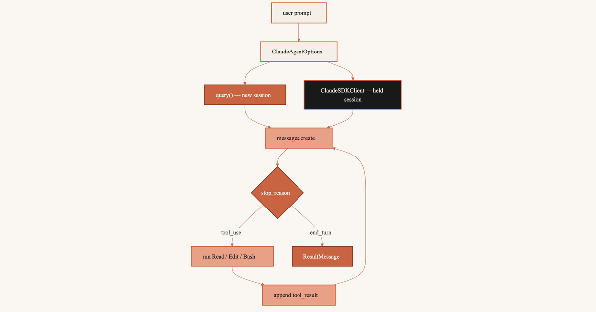

%%{init: {"theme": "base", "themeVariables": {"fontFamily": "ui-sans-serif, system-ui, sans-serif", "lineColor": "#C96442", "edgeLabelBackground": "#FAF7F2", "clusterBkg": "#F4F0E8", "clusterBorder": "#C96442"}}}%%
flowchart TB
Prompt["user prompt"] --> Options["ClaudeAgentOptions"]
Options --> Query["query() — new session"]
Options --> Client["ClaudeSDKClient — held session"]
Query --> Create["messages.create"]
Client --> Create
Create --> Stop{"stop_reason"}
Stop -->|"tool_use"| Tools["run Read / Edit / Bash"]
Tools --> Append["append tool_result"]
Append --> Create
Stop -->|"end_turn"| Result["ResultMessage"]
classDef cream fill:#F4F0E8,stroke:#C96442,stroke-width:2px,color:#191919
classDef terracotta fill:#C96442,stroke:#8F3F24,stroke-width:2px,color:#FAF7F2
classDef dark fill:#191919,stroke:#C96442,stroke-width:2px,color:#FAF7F2
classDef peach fill:#E8A087,stroke:#C96442,stroke-width:2px,color:#191919
class Prompt,Options cream
class Query terracotta
class Client dark
class Create,Tools,Append peach
class Stop,Result terracotta

messages.create() returns one model turn. An agent that reads a file, edits it, and runs a test needs many turns. You append the tool_use, run the function, append the tool_result, and call again.
The Agent SDK wraps Claude Code so you skip that loop. Use query() for one shot. Use ClaudeSDKClient to keep talking.
query() starts a child process, works, and exits. ClaudeSDKClient starts the process once and leaves it up. A later prompt can say “the first one”.
query() shuts the child process down after one turn. The client keeps it. The diamond is stop_reason. Loop while the model wants a tool. Stop when it is done.
1 Agent SDK
Claude Code already does this in a terminal. You type a prompt. Claude reads a file or runs a command. It looks at the output. It decides whether to continue. The Agent SDK starts that process from Python. The package is claude-agent-sdk.
The child process:
- starts and stops Claude Code
- offers
Read,Edit,Write,Bash,Glob,Grep - checks permissions (
permission_mode,allowed_tools) - calls the model again after each tool result
messages.create() is one HTTP request. You send the history. You get one turn back. Claude does not open a shell. It does not edit files. It does not call itself again. A tool_use block means you run the function and send the next request. That package is the Anthropic Python SDK. Write the loop there. Let Claude Code write it here.
2 query vs ClaudeSDKClient
Two ways in. Both take ClaudeAgentOptions: system prompt, tools, permissions. Both are asyncio. Wrap them in async def main() and start with asyncio.run(main()). That asyncio.run starts the event loop. It is not a client method.
query()— one prompt, no follow-up. Opens a session, works, closes. Nointerrupt(). To continue later, passcontinue_conversation=Trueor aresumeid.ClaudeSDKClient— the next prompt depends on the last answer. Theasync withblock holds the connection. A secondclient.query()keeps the session. Noresume.interrupt()works.
Open the client with async with ClaudeSDKClient(options) as client. Python connects on enter and disconnects on leave. After client.query(), read receive_response() until the turn ends. Then send the next prompt.
2.1 run
Other libraries ship client.run(prompt). One call sends and waits. ClaudeSDKClient has no .run(). It splits the turn so you can interrupt.
await client.query(prompt)— write the user turn. Returns when the write lands. Tools may still be running.async for message in client.receive_response()— read untilResultMessage.
%%{init: {"theme": "base", "themeVariables": {"fontFamily": "ui-sans-serif, system-ui, sans-serif", "lineColor": "#C96442", "edgeLabelBackground": "#FAF7F2", "clusterBkg": "#F4F0E8", "clusterBorder": "#C96442"}}}%%
flowchart TB
subgraph missing ["Guessed one-shot"]
Run["client.run(prompt)"]
end
subgraph present ["Actual turn"]
Q["query(prompt) — write"]
Gap["interrupt() window"]
Recv["receive_response() — wait"]
Done["ResultMessage"]
Q --> Gap --> Recv --> Done
end
Run -.-> Q
classDef cream fill:#F4F0E8,stroke:#C96442,stroke-width:2px,color:#191919
classDef terracotta fill:#C96442,stroke:#8F3F24,stroke-width:2px,color:#FAF7F2
classDef dark fill:#191919,stroke:#C96442,stroke-width:2px,color:#FAF7F2
classDef peach fill:#E8A087,stroke:#C96442,stroke-width:2px,color:#191919
class Run peach
class Q terracotta
class Gap dark
class Recv peach
class Done terracotta
The dashed edge is run(). It is missing. Send, optionally cancel, then wait.
3 One-shot query
Use query() for one prompt. ClaudeAgentOptions sets the system prompt, the tools, and whether edits apply without asking.
Code
import asyncio
from claude_agent_sdk import (
AssistantMessage,
ClaudeAgentOptions,
ResultMessage,
TextBlock,
query,
)
async def main():
options = ClaudeAgentOptions(
system_prompt="You are a Python reviewer. Edit only what the prompt names.",
allowed_tools=["Read", "Edit", "Glob"],
permission_mode="acceptEdits",
)
async for message in query(
prompt="Add a one-line module docstring to src/auth.py",
options=options,
):
if isinstance(message, AssistantMessage):
for block in message.content:
if isinstance(block, TextBlock):
print(block.text)
elif isinstance(message, ResultMessage):
print(message.subtype, message.total_cost_usd)
asyncio.run(main())Hand-written. No ANTHROPIC_API_KEY; the cell does not run.
AssistantMessage(
content=[
TextBlock(
type='text',
text='Added a module docstring to src/auth.py.',
),
],
)
ResultMessage(
subtype='success',
total_cost_usd=0.0421,
)query() starts Claude Code. It can Read and Edit src/auth.py. Text streams out. ResultMessage ends the loop. You never check stop_reason. The child process already did.
4 Persistent client
List the files under src/. Then ask Claude to open the first one. The second prompt names no path. Claude needs the first answer to pick src/auth.py.
ClaudeSDKClient keeps the session. Stay in the async with block. Each client.query() continues the conversation. Send with query(). Wait with receive_response().
Code
import asyncio
from claude_agent_sdk import (
AssistantMessage,
ClaudeAgentOptions,
ClaudeSDKClient,
TextBlock,
)
async def main():
options = ClaudeAgentOptions(
allowed_tools=["Read", "Glob"],
permission_mode="acceptEdits",
)
async with ClaudeSDKClient(options=options) as client:
await client.query("List the Python files under src/")
async for message in client.receive_response():
if isinstance(message, AssistantMessage):
for block in message.content:
if isinstance(block, TextBlock):
print(block.text)
await client.query("Open the first one and quote its module docstring.")
async for message in client.receive_response():
if isinstance(message, AssistantMessage):
for block in message.content:
if isinstance(block, TextBlock):
print(block.text)
asyncio.run(main())Hand-written. The second answer names src/auth.py. The prompt did not.
First turn:
Claude: src/auth.py
src/app.pySecond turn:
Claude: src/auth.py starts with: """Session tokens and password checks."""Two standalone query() calls start two sessions. The second has no file list. Pass resume or continue_conversation=True, or name src/auth.py.
5 Messages API loop
query() and the client still call messages.create(). You or Claude Code must keep the messages list and run the tools.
Write the loop and you do eight steps each time the model wants a tool:
- Call
client.messages.create(...)withtoolsand the currentmessageslist. - Read
response.stop_reason. - If it is
"tool_use", collect everytool_useblock. - Run each named function on
block.input. - Append the assistant turn (
response.content) tomessages. - Append a user turn whose content is the matching
tool_resultblocks. - Call
messages.create()again with that longer list. - Repeat from step 2 until
stop_reasonis not"tool_use".
Code
import asyncio
import anthropic
POLICIES = {
"standard": "Refunds within 30 days of purchase, unused items only.",
"plus": "Refunds within 60 days; opened software is excluded.",
}
def lookup_policy(plan: str) -> str:
return POLICIES.get(plan, "No policy found for that plan.")
async def main():
client = anthropic.AsyncAnthropic()
tools = [
{
"name": "lookup_policy",
"description": "Return the refund policy text for a subscription plan.",
"input_schema": {
"type": "object",
"properties": {"plan": {"type": "string"}},
"required": ["plan"],
},
}
]
messages = [{"role": "user", "content": "What is the refund window on Plus?"}]
response = await client.messages.create(
model="claude-sonnet-5",
max_tokens=1024,
tools=tools,
messages=messages,
)
while response.stop_reason == "tool_use":
messages.append({"role": "assistant", "content": response.content})
results = []
for block in response.content:
if block.type == "tool_use":
results.append(
{
"type": "tool_result",
"tool_use_id": block.id,
"content": lookup_policy(block.input["plan"]),
}
)
messages.append({"role": "user", "content": results})
response = await client.messages.create(
model="claude-sonnet-5",
max_tokens=1024,
tools=tools,
messages=messages,
)
asyncio.run(main())The refund rows are made up. They show block shape, not a real policy store.
query() and ClaudeSDKClient run those eight steps inside Claude Code. Set allowed_tools. Read AssistantMessage and ResultMessage. The Anthropic Python SDK post lists the six stop_reason values. The orchestrator-worker loop writes the branch.
Query. Starts. Fresh. Client. Holds. Context. Loop. Stays. Hidden.
6 References
- Agent SDK reference — Python
- Agent SDK: Sessions
- Anthropic: Tool use
- Claude API with the Anthropic Python SDK — this blog;
messages.create()and the sixstop_reasonvalues. - Claude Certified Architect, Week 1: The Orchestrator-Worker Loop — this blog; the loop that branches on every
stop_reason.